<!DOCTYPE html>
<html>

<head><meta name="generator" content="Hexo 3.8.0">
  <meta charset="utf-8">
  
    <title>
      
        2022年前半の遠征を振り返る（その2） | 
            ほしよみ大学生のブログ
    </title>
    <meta name="viewport" content="width=device-width">
    <meta name="description" content="こんにちはまたまた久々の更新となります．今年はだいたい月一くらいのペースで星見に遠征しています．5月は，前回の記事で清里原村に行った際の記事を書きましたが，後半は栃木県の育樹祭記念広場へ，6月は戦場ヶ原へ行きました．普段はあまり遠征で訪れない北関東のシーズン(？)です．">
<meta name="keywords" content="写真,天体写真,遠征記,機材,レンズ">
<meta property="og:type" content="article">
<meta property="og:title" content="2022年前半の遠征を振り返る（その2）">
<meta property="og:url" content="http://dabokun.github.io/2022/09/02/00000064-2022-05-06/index.html">
<meta property="og:site_name" content="ほしよみ大学生のブログ">
<meta property="og:description" content="こんにちはまたまた久々の更新となります．今年はだいたい月一くらいのペースで星見に遠征しています．5月は，前回の記事で清里原村に行った際の記事を書きましたが，後半は栃木県の育樹祭記念広場へ，6月は戦場ヶ原へ行きました．普段はあまり遠征で訪れない北関東のシーズン(？)です．">
<meta property="og:locale" content="ja">
<meta property="og:image" content="http://dabokun.github.io/2022/09/02/00000064-2022-05-06/card.jpg">
<meta property="og:updated_time" content="2022-09-03T15:01:11.302Z">
<meta name="twitter:card" content="summary_large_image">
<meta name="twitter:title" content="2022年前半の遠征を振り返る（その2）">
<meta name="twitter:description" content="こんにちはまたまた久々の更新となります．今年はだいたい月一くらいのペースで星見に遠征しています．5月は，前回の記事で清里原村に行った際の記事を書きましたが，後半は栃木県の育樹祭記念広場へ，6月は戦場ヶ原へ行きました．普段はあまり遠征で訪れない北関東のシーズン(？)です．">
<meta name="twitter:image" content="http://dabokun.github.io/2022/09/02/00000064-2022-05-06/card.jpg">
<meta name="twitter:creator" content="@dabo_pic">
      
        <link rel="alternative" href="/atom.xml" title="ほしよみ大学生のブログ" type="application/atom+xml">
        
          
            <link rel="icon" href="/images/favicon.png">
            
              <link rel="stylesheet" href="/css/style.css">
                <!--[if lt IE 9]><script src="//html5shiv.googlecode.com/svn/trunk/html5.js"></script><![endif]-->
                
                  <script data-ad-client="ca-pub-1350688970555904" async src="https://pagead2.googlesyndication.com/pagead/js/adsbygoogle.js"></script>
</head></html>
<body>
  <div id="container">
    <div class="mobile-nav-panel">
	<i class="icon-reorder icon-large"></i>
</div>
<header id="header">
	<h1 class="blog-title">
		<a href="/">ほしよみ大学生のブログ</a>
	</h1>
	<nav class="nav">
		<ul>
			<li><a href="/">Home</a></li><li><a href="/categories">Categories</a></li><li><a href="/tags">Tags</a></li><li><a href="/archives">Archives</a></li><li><a href="/about">About</a></li><li><a href="/work">Work</a></li>
			<li><a id="nav-search-btn" class="nav-icon" title="Search"></a></li>
			<li><a href="https://github.com/dabokun"></a>
			</li>
			<li><a href="https://twitter.com/dabo_pic"></a></li>
			<li><a href="/atom.xml" id="nav-rss-link" class="nav-icon" title="RSS Feed"></a>
			</li>
		</ul>
	</nav>
	<div id="search-form-wrap">
		<form action="//google.com/search" method="get" accept-charset="UTF-8" class="search-form"><input type="search" name="q" class="search-form-input" placeholder="Search"><button type="submit" class="search-form-submit">&#xF002;</button><input type="hidden" name="sitesearch" value="http://dabokun.github.io"></form>
	</div>
</header>
    <div id="main">
      <article id="post-00000064-2022-05-06" class="post">
	<footer class="entry-meta-header">
		<span class="meta-elements date">
			<a href="/2022/09/02/00000064-2022-05-06/" class="article-date">
  <time datetime="2022-09-02T11:28:20.000Z" itemprop="datePublished">2022-09-02</time>
</a>
		</span>
		<span class="meta-elements author">astr0dab0</span>
		<div class="commentscount">
			
			<a href="http://dabokun.github.io/2022/09/02/00000064-2022-05-06/#disqus_thread" class="article-comment-link">Comments</a>
			
		</div>
	</footer>
	
	<header class="entry-header">
		
  
    <h1 class="article-title entry-title" itemprop="name">
      2022年前半の遠征を振り返る（その2）
    </h1>
  

	</header>
	<div class="entry-content">
		
		
		<div id="toc" class="toc-article">
			<p class="toc-title">目次</p>
			<ol class="toc"><li class="toc-item toc-level-3"><a class="toc-link" href="#こんにちは"><span class="toc-number">1.</span> <span class="toc-text">こんにちは</span></a></li><li class="toc-item toc-level-3"><a class="toc-link" href="#5月-栃木県育樹祭記念広場"><span class="toc-number">2.</span> <span class="toc-text">5月 栃木県育樹祭記念広場</span></a></li><li class="toc-item toc-level-3"><a class="toc-link" href="#6月-戦場ヶ原"><span class="toc-number">3.</span> <span class="toc-text">6月 戦場ヶ原</span></a></li></ol>
		</div>
		
		<h3 id="こんにちは"><a href="#こんにちは" class="headerlink" title="こんにちは"></a>こんにちは</h3><p>またまた久々の更新となります．<br>今年はだいたい月一くらいのペースで星見に遠征しています．5月は，前回の記事で清里原村に行った際の記事を書きましたが，後半は栃木県の育樹祭記念広場へ，6月は戦場ヶ原へ行きました．普段はあまり遠征で訪れない北関東のシーズン(？)です．</p>
<a id="more"></a>
<h3 id="5月-栃木県育樹祭記念広場"><a href="#5月-栃木県育樹祭記念広場" class="headerlink" title="5月 栃木県育樹祭記念広場"></a>5月 栃木県育樹祭記念広場</h3><p>育樹祭記念広場というと最初に思い浮かぶのは前回の記事でも行こうとした山梨県にある全国育樹祭記念広場ですが，どうやら栃木県にもあるらしい．当初福島県某所に行こうかと思っていたのですが，普段お世話になっている<a href="http://morio.way-nifty.com/blog/2022/06/post-b5df5b.html" target="_blank" rel="noopener">M&amp;M さん</a>と，彼のご友人の<a href="https://twitter.com/UFK58Hworld" target="_blank" rel="noopener">風の民さん</a>も来られるということで，そちらに進路を切り替えました．道中東京に出るついでにこんなものを借りてみました．</p>
<p>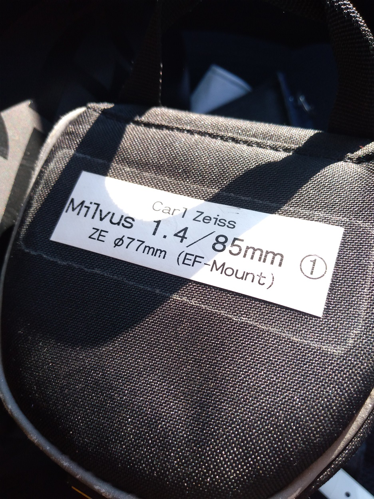</p>
<p>前々から気になっていた Zeiss Milvus 1.4/85 です．星に良いという話を聞いていたのですが，ネットに作例がほとんどないので，レンタルショップで借りてみました．レンタル日→利用日→返却日と借りることができて，レンタル料は￥4,000也．曇るとつらいですが覚悟の上です．外装は傷だらけですが，レンズ自体はキレイに見えます．<br>やはり北関東となると一人で出るのはなかなかに疲れます．途中のコンビニで夕飯を買ってサクッと現地入り．M&amp;M さんは久喜白岡JCTでの大渋滞にハマってなかなかたどり着かないようで，先に着いていた風の民さんとはじめましての挨拶をして，テキトーに機材を展開します．<br>この近くの八方ヶ原に，大学入学当初訪れた経験がありますが，その時は晴れなかったのでどのような空かはちっともわかりません．<br>薄明も終わるかという頃，最初来た時にあった薄雲もとれてきました．</p>
<p>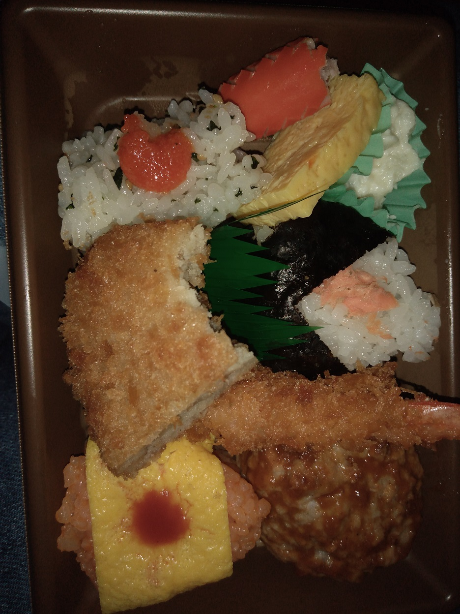<br>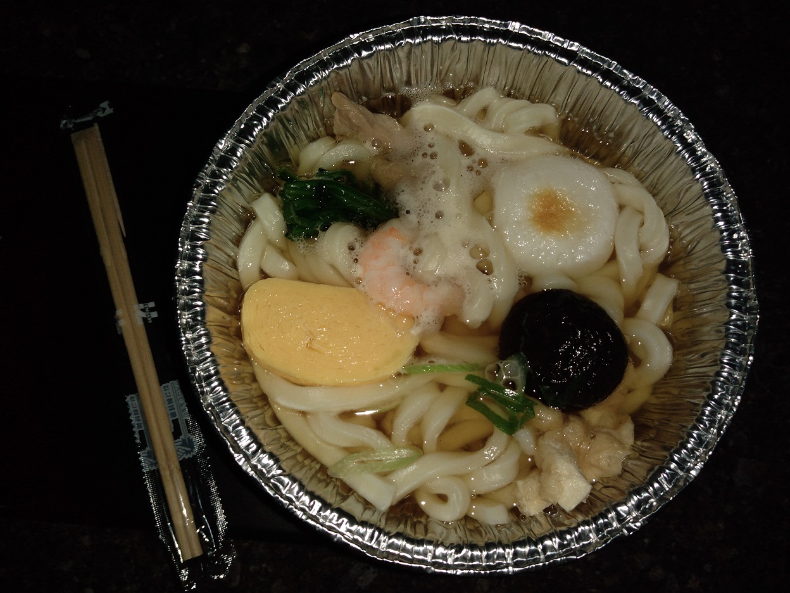</p>
<p>おなかがすいてきたので夕飯を………夕飯をテキトーに買いすぎました．うどんがなければ餓死するところでした．<br>今回はM8/M20を露光．といっても，北は暗いですが南はだいぶ明るく，理想的な環境であるかは疑問です．</p>
<p>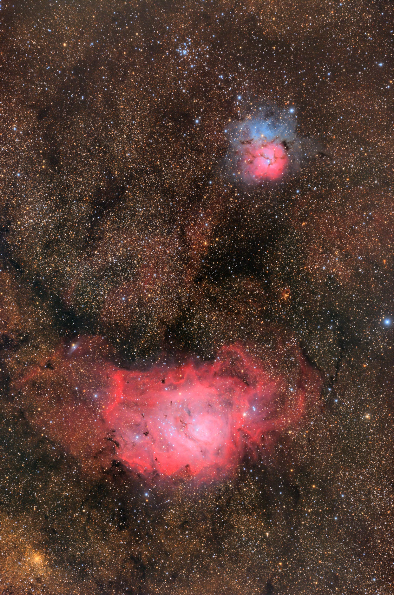</p>
<div style="text-align: center;">
「M8干潟星雲/M20三裂星雲 周辺」<br>
2022年5月28日～5月29日 栃木県矢板市 育樹祭記念広場<br>
FSQ-85EDP+Flattener 1.01X<br>
QHY268C<br>
Gain 26/Offset 50/-20℃/180s*46<br>
Optolong UV/IR Cut 2''
Total: 138min<br>
タカハシ EM-200 TemmaPC Jr. + MGEN-3<br>
Adobe Lightroom CC / Photoshop CC / PixInsight<br>
<a href="https://www.astrobin.com/ehovvn/" target="_blank" rel="noopener">AstroBin</a><br><br>
</div>

<p>…とはいえ，なかなかいいんじゃないでしょうか．前回のブログで Baby-Q の一様な色ズレについて指摘しましたが，フィルターを UV/IR Cut としても変わりませんでしたので，光学系かなあと思っています．深刻度としては，PixInsight 上で容易に補正（チャンネル分解→StarAlignment→再合成）して個人的に問題ないレベルになりますので，気が向いたら工場で見てもらおうかな，くらいの軽い問題意識で落ち着いています．</p>
<p>EM-200を撮影に回していたので眼視は夜明け前に少しだけ，惑星を見ました．このときは木星と土星がかなり近く，50倍で同一視野に入っていたかと思います．<br>その後はのんびりと帰宅．C2をひた走って3～4時間くらいで帰宅となりました．<br>Milvus 85ですが，フルサイズ周辺では非点収差が見られ，またパープル～赤のフリンジが出てしまい，なかなかに難しいレンズだなあというのが率直な感想です．</p>
<p>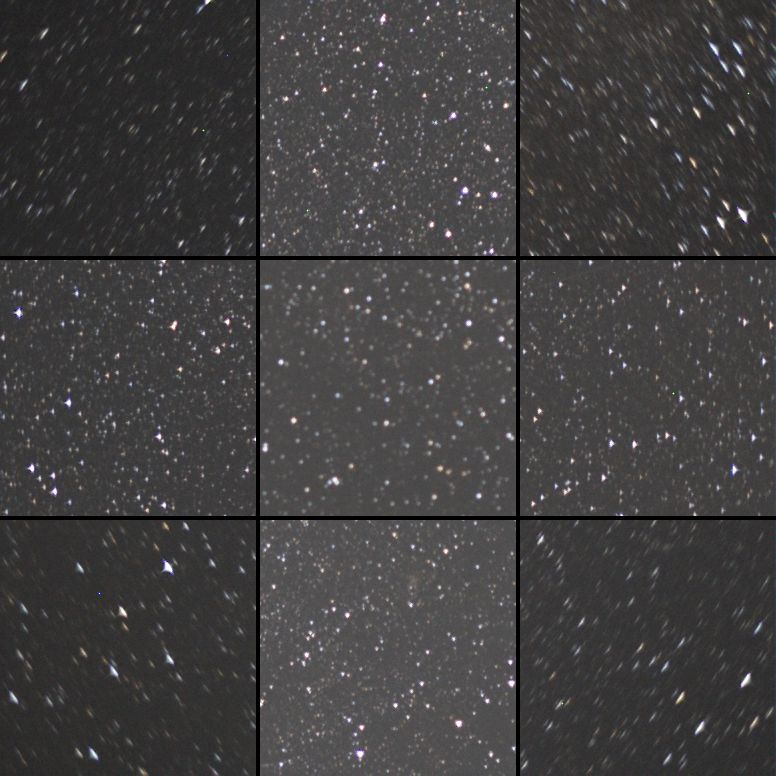<br>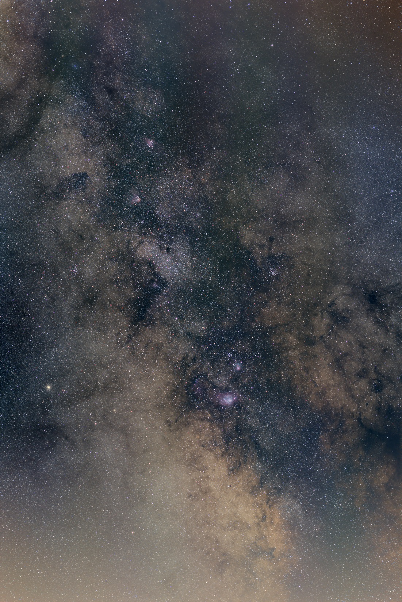</p>
<p>上の通りバンビ付近も撮ってみましたが，光害がひどく僕の処理では救いようがありません．北側によくわからない縞状のアーティファクトも出てきました，これはレンズではなくカメラの問題だと思う，なんじゃこりゃ．<br>星撮りにはなんとも難しいですが，少なくとも普段撮りではかなり好みな写りをするので，予算が無限にあったら買っていたかもしれません．</p>
<p>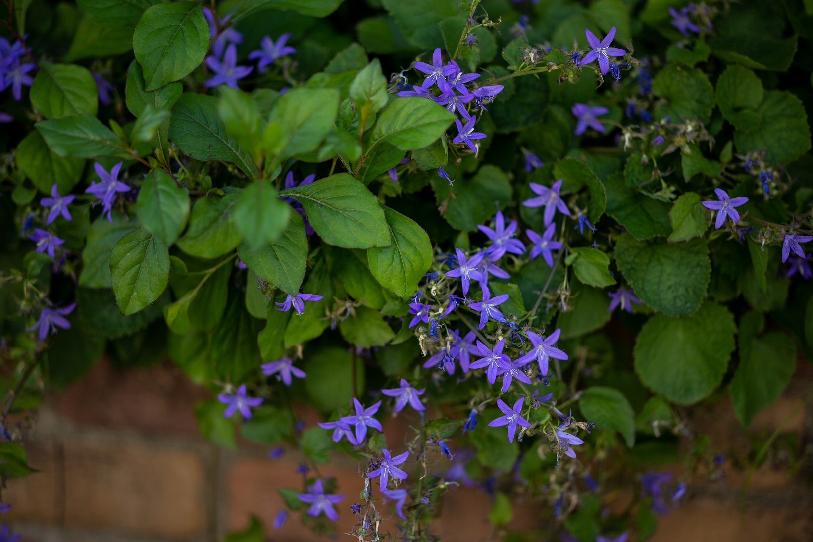<br>こういうアンダーめなシーンでの写りが個人的にすごく好きです．ミラーレスが台頭してきていますので，移行してから似たようなレンズが出てきてからかなあという気持ちもあります．</p>
<h3 id="6月-戦場ヶ原"><a href="#6月-戦場ヶ原" class="headerlink" title="6月 戦場ヶ原"></a>6月 戦場ヶ原</h3><p>6月は戦場ヶ原へ．調べたら2018年ぶりでした．予報が相変わらず良くなく，富士山五合目と迷いこちらに決めました．日光に行くと春曉庭ゆりんさんというかわいい猫がいる温泉をよく利用させていただいていたのですが，ちょうどコロナ禍の頃からずっと休業していて，いつまた入れるのかなと思っています．今回は別の入浴施設 ほの香 さんを利用．宿泊施設に付随？しているようで，無人で営業されています．</p>
<p>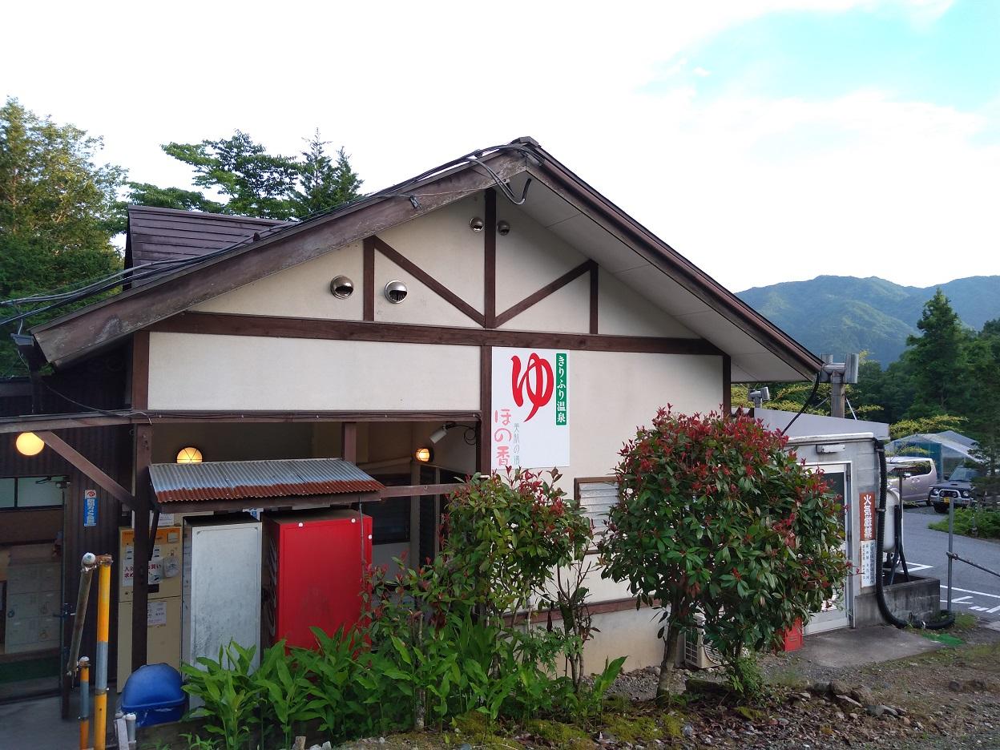</p>
<p>疲れていたのか，マスクをしたままシャワーをかぶるという謎の失態を犯しました．浴室内にほとんど人がいなかったのが救い…．</p>
<p>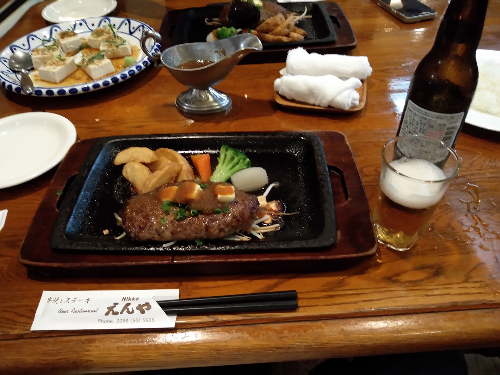</p>
<p>温泉後はレストランで（ノンアル）ビールを飲み，いろは坂を登って三本松園地へ．現地には<a href="https://twitter.com/sasurai4649" target="_blank" rel="noopener">さすらいさん</a>が先に到着していました．道中<a href="https://twitter.com/sasurai4649/status/1540771070629650433" target="_blank" rel="noopener">彼も見たという鹿</a>に遭遇したりもしました．<br>もともと天気予報が芳しくなかったので，FSQ は家でお休みで眼視機材だけを持ってきていました．天気は晴れたりドン曇りになったりでしたが，最終的には天の川がしっかり見えるくらいにはなってくれました．</p>
<p>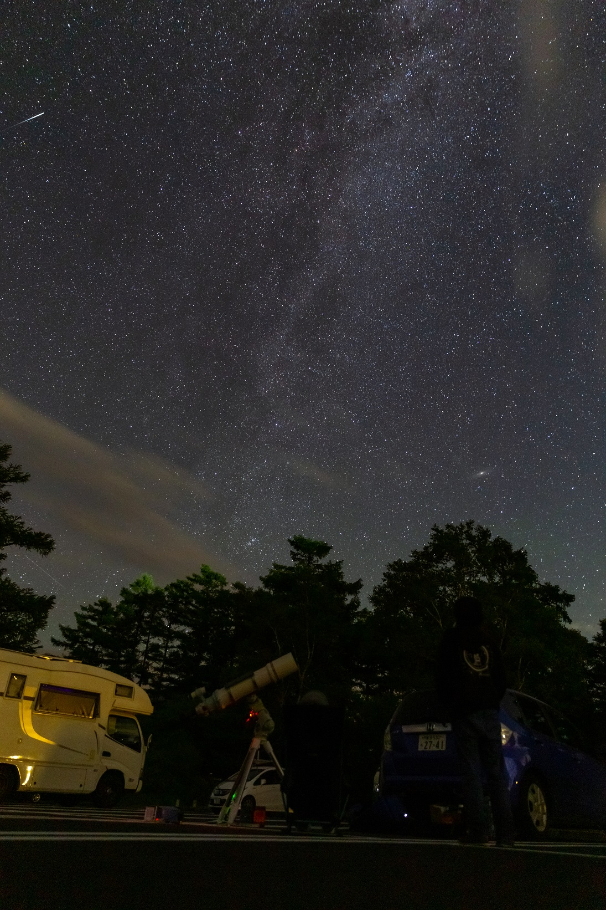<br>戦場ヶ原で直焦撮影するならやはり天頂～北の空になるでしょう．</p>
<p>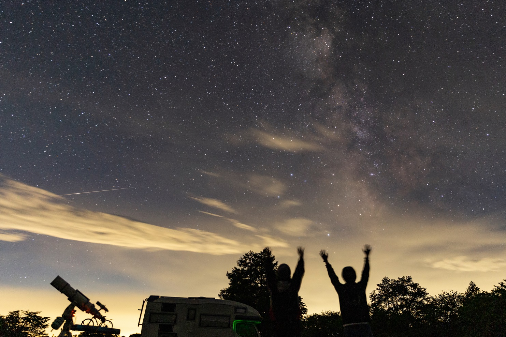<br>今回は眼視に集中していたので流星も割とたくさん見た気がします．</p>
<p>惑星や今シーズン初の M31，h-χ などを眼視で楽しみました．今回から EZM も導入していたので，快適な眼視環境を得ることができました．</p>
<p>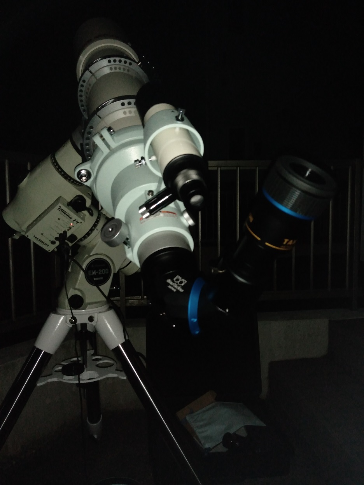</p>
<p>戦場ヶ原の締めは久々に行きたかった板橋のピノキオでホットケーキをば．朝イチで行ったので人気店ですが2番手ぐらいで入ることができました．その後は特に何事もなく帰宅．</p>
<p>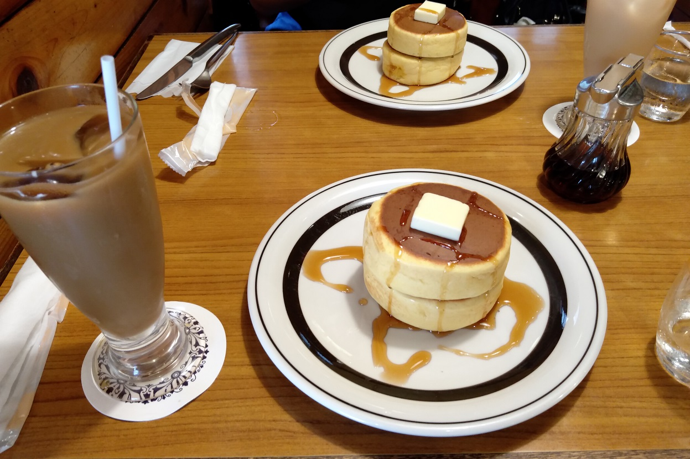</p>
<p>今回のところはこんな感じで．それでは！</p>

		
	</div>
	<footer class="article-footer">
		<a href="https://twitter.com/intent/tweet?text=2022%E5%B9%B4%E5%89%8D%E5%8D%8A%E3%81%AE%E9%81%A0%E5%BE%81%E3%82%92%E6%8C%AF%E3%82%8A%E8%BF%94%E3%82%8B%EF%BC%88%E3%81%9D%E3%81%AE2%EF%BC%89｜%E3%81%BB%E3%81%97%E3%82%88%E3%81%BF%E5%A4%A7%E5%AD%A6%E7%94%9F%E3%81%AE%E3%83%96%E3%83%AD%E3%82%B0&url=http://dabokun.github.io/2022/09/02/00000064-2022-05-06/" class="twitter-share-button" target="_blank" title="Twitter"></a>
		<script async src="https://platform.twitter.com/widgets.js" charset="utf-8"></script>

		<div id="fb-root"></div>
		<script async defer crossorigin="anonymous" src="https://connect.facebook.net/ja_JP/sdk.js#xfbml=1&version=v4.0"></script>
		<div class="fb-share-button" data-href="http://dabokun.github.io/2022/09/02/00000064-2022-05-06/" data-layout="button_count" data-size="small"><a target="_blank" href="https://www.facebook.com/sharer/sharer.php?u=https%3A%2F%2Fdabokun.github.io%2F&amp;src=sdkpreparse" class="fb-xfbml-parse-ignore">シェア</a></div>
	</footer>
	<footer class="entry-footer">
		<div class="entry-meta-footer">
			<span class="category">
				
  <div class="article-category">
    <a class="article-category-link" href="/categories/expedition/">遠征記</a>
  </div>

			</span>
			<span class=" tags">
				
  <ul class="article-tag-list"><li class="article-tag-list-item"><a class="article-tag-list-link" href="/tags/lens/">レンズ</a></li><li class="article-tag-list-item"><a class="article-tag-list-link" href="/tags/photography/">写真</a></li><li class="article-tag-list-item"><a class="article-tag-list-link" href="/tags/astrophotography/">天体写真</a></li><li class="article-tag-list-item"><a class="article-tag-list-link" href="/tags/equipments/">機材</a></li><li class="article-tag-list-item"><a class="article-tag-list-link" href="/tags/expedition/">遠征記</a></li></ul>

			</span>
		</div>
	</footer>
	
	
<nav id="article-nav">
  
    <a href="/2999/12/31/99999999-notice/" id="article-nav-newer" class="article-nav-link-wrap">
      <strong class="article-nav-caption">Newer</strong>
      <div class="article-nav-title">
        
          お知らせ
        
      </div>
    </a>
  
  
    <a href="/2022/05/15/00000063-2022-first-half-lookback01/" id="article-nav-older" class="article-nav-link-wrap">
      <strong class="article-nav-caption">Older</strong>
      <div class="article-nav-title">
        
          2022年前半の遠征を振り返る（その1）
        
      </div>
    </a>
  
</nav>

	
</article>


<section id="comments">
	<div id="disqus_thread">
		<noscript>Please enable JavaScript to view the <a href="//disqus.com/?ref_noscript">comments powered by
				Disqus.</a></noscript>
	</div>
</section>

    </div>
    <div class="mb-search">
  <form action="//google.com/search" method="get" accept-charset="utf-8">
    <input type="search" name="q" results="0" placeholder="Search">
    <input type="hidden" name="q" value="site:dabokun.github.io">
  </form>
</div>
<footer id="footer">
	<h1 class="footer-blog-title">
		<a href="/">ほしよみ大学生のブログ</a>
	</h1>
	<span class="copyright">
		&copy; 2022 astr0dab0<br>
		Modify from <a href="http://sanographix.github.io/tumblr/apollo/" target="_blank">Apollo</a> theme, designed by <a href="http://www.sanographix.net/" target="_blank">SANOGRAPHIX.NET</a><br>
		Powered by <a href="http://hexo.io/" target="_blank">Hexo</a>
	</span>
</footer>
    
<script>
  var disqus_shortname = 'astr0dab0';
  
  var disqus_url = 'http://dabokun.github.io/2022/09/02/00000064-2022-05-06/';
  
  (function(){
    var dsq = document.createElement('script');
    dsq.type = 'text/javascript';
    dsq.async = true;
    dsq.src = '//go.disqus.com/embed.js';
    (document.getElementsByTagName('head')[0] || document.getElementsByTagName('body')[0]).appendChild(dsq);
  })();
</script>


<script src="//ajax.googleapis.com/ajax/libs/jquery/2.0.3/jquery.min.js"></script>


<link rel="stylesheet" href="/fancybox/jquery.fancybox.css" media="screen" type="text/css">
<script src="/fancybox/jquery.fancybox.pack.js"></script>


<script src="/js/script.js"></script>
  </div>
</body>
</html>